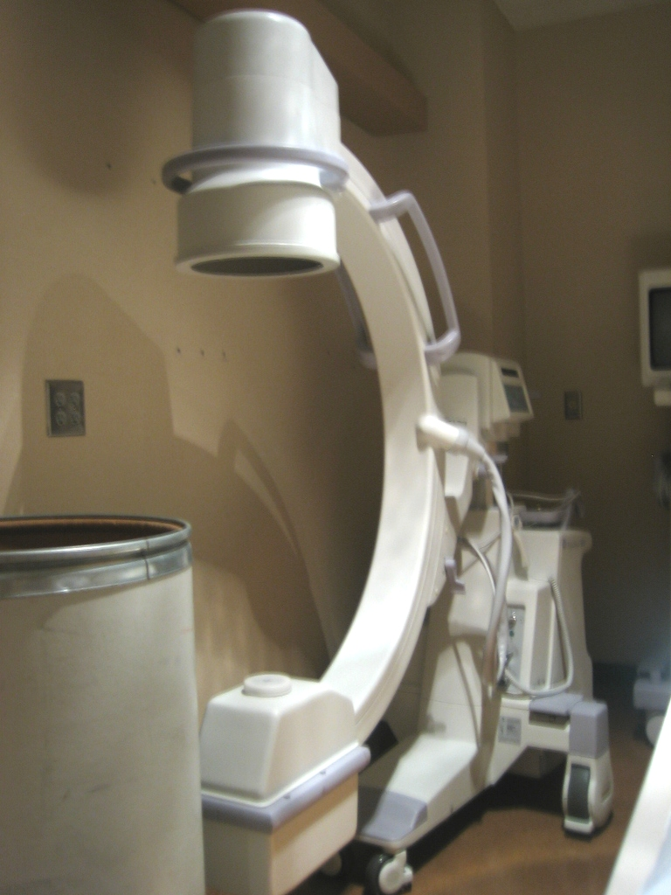
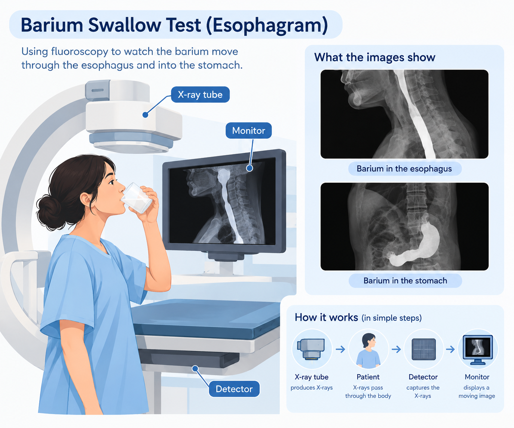

A conventional X-ray gives us a picture of the body at one particular moment. But sometimes, one picture is not enough. We may need to see what is happening while something is moving.
This is where fluoroscopy is useful.
Fluoroscopy is an X-ray imaging technique that displays a changing image on a monitor. It can be used to observe body structures, contrast material, or medical instruments while they are moving during an examination or procedure.

How does it work?
The basic idea is quite simple.
An X-ray tube produces X-rays and sends them through the part of the body being examined. Some X-rays are absorbed by the body, while others pass through and reach a detector.
In a conventional radiograph, the information from the detector is used to produce a still image.
In fluoroscopy, images are acquired repeatedly during the examination and displayed on a monitor. Because these images are shown in rapid sequence, the movement of body structures, contrast material, or instruments can be followed.
That is the basic idea behind fluoroscopic imaging.
A simple clinical example: swallowing
One of the easiest ways to understand fluoroscopy is through a swallowing examination.
During a Video Fluoroscopic Swallowing Examination (VFSE), a patient is given different liquids or foods containing barium. Barium is a radiopaque contrast material, which makes the material easier to see on X-ray.
As the patient swallows, fluoroscopy allows the examination team to watch the movement on the monitor. The study can show how the swallowed material moves through the mouth and throat and can help assess whether swallowing is safe and effective.
This is something a single X-ray image cannot show as well.
A still image can show the position of the material. Fluoroscopy can show how it moves over time.

What else can we watch with fluoroscopy?
Fluoroscopy is useful whenever movement is important to an examination or procedure.
- Follow contrast material through the digestive system.
- Observe blood vessels during certain contrast examinations.
- Guide catheters and other medical instruments.
- Help guide some orthopedic procedures.
- Guide the placement of devices such as stents.
For example, during an upper gastrointestinal examination, a patient may drink barium while fluoroscopy is used to observe its movement through the esophagus, stomach, and duodenum.
In interventional procedures, fluoroscopy can also help a physician see the position of an instrument and guide it toward the required location.
Is the X-ray beam always switched on?
Not necessarily.
Fluoroscopy can use a continuous X-ray beam or pulsed fluoroscopy, in which X-rays are produced in short pulses. The resulting images can still be displayed rapidly enough to follow movement.
The exact imaging settings depend on the equipment and the type of examination or procedure.
So, when we say that fluoroscopy provides a “real-time” view, it does not necessarily mean that the X-ray tube is producing radiation continuously every second.
The important idea is that images are acquired repeatedly and displayed quickly enough to follow changes over time.
What about radiation dose?
Fluoroscopy uses ionizing radiation, just like conventional X-rays.
Because fluoroscopy may involve repeated X-ray exposures over a longer period, radiation exposure can be higher than with a single radiograph, especially during longer or more complex procedures.
This is why radiation protection is important during fluoroscopy. The imaging team aims to use the radiation needed to obtain useful images while avoiding unnecessary exposure.
Modern fluoroscopy systems can include dose-management features. One example is last-image hold, which allows the most recently acquired image to be reviewed without continuing the X-ray exposure.
Fluoroscopy vs. a normal X-ray
The easiest way to remember the difference is:
| Conventional X-ray | Fluoroscopy |
|---|---|
| Mainly produces a still image | Displays a moving sequence of images |
| Useful for viewing anatomy at one point in time | Useful when movement needs to be observed |
| Commonly used for chest and bone examinations | Commonly used for contrast studies and image-guided procedures |
| Often involves a short exposure | May involve repeated exposures during the examination |
Both use X-rays. The main difference is how the images are acquired and displayed.
The main idea
Fluoroscopy is useful when we need more than a picture.
It allows us to follow movement over time — whether that is contrast passing through the digestive tract, a patient swallowing, or an instrument being guided during a procedure.
Radiography mainly shows us what is there.
Fluoroscopy helps us see what is happening over time.
Sources
- U.S. Food and Drug Administration (FDA) — Fluoroscopy
- U.S. Food and Drug Administration (FDA) — Questions and Answers for Physicians About Medical X-rays
- RadiologyInfo.org — Video Fluoroscopic Swallowing Exam (VFSE) / Esophagram